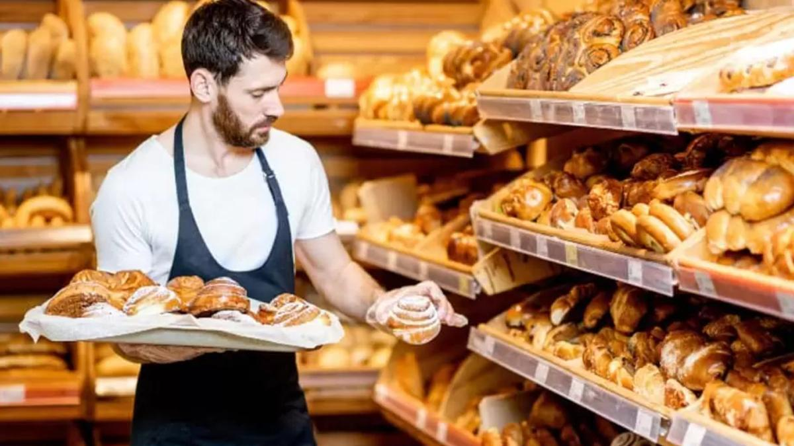
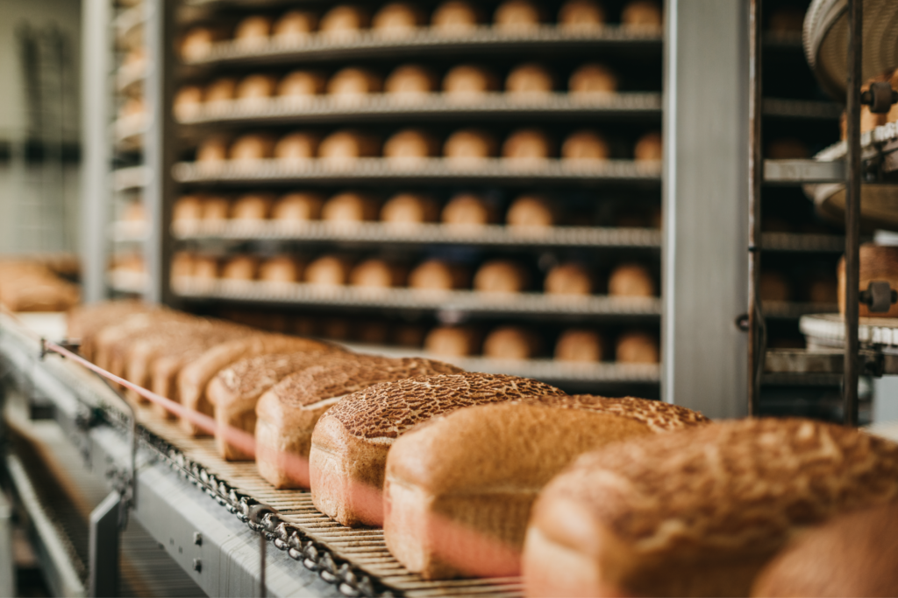
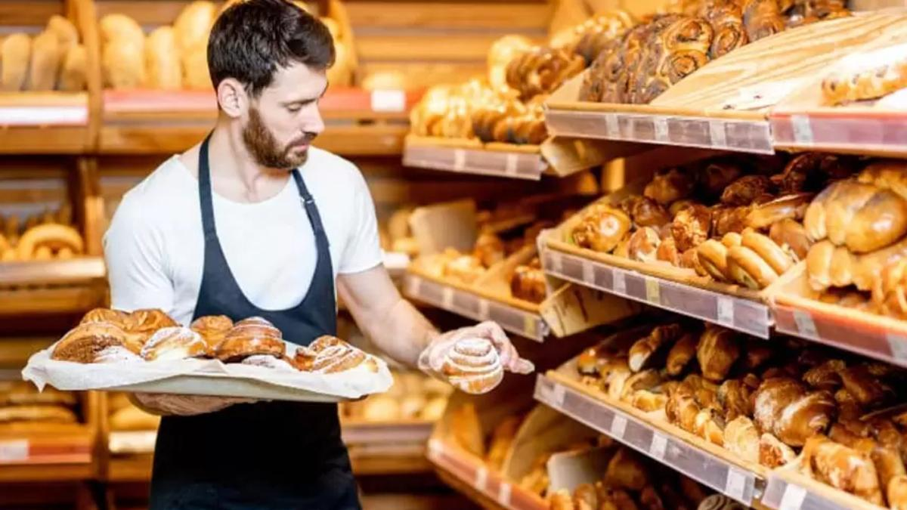
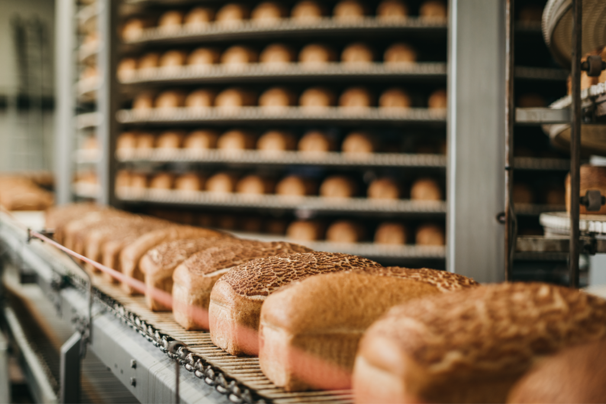

Sobre Nosotros
La panadería Dulpapan comenzó como un modesto emprendimiento familiar en el corazón de un pequeño pueblo. Fundada por los hermanos Dulce, Pablo y Ana, quienes combinaron su pasión por la panadería con recetas tradicionales transmitidas de generación en generación, la panadería pronto se convirtió en un punto de referencia para los lugareños y visitantes por igual. Su compromiso con ingredientes frescos y técnicas artesanales pronto ganó popularidad, atrayendo a una clientela fiel que apreciaba la calidad y el sabor auténtico de sus productos.
Con el tiempo, Dulpapan expandió su alcance, abriendo nuevas sucursales en las ciudades vecinas. A medida que crecía su reputación, la panadería comenzó a diversificar su oferta, introduciendo una variedad de pasteles, tartas y bollería, siempre manteniendo el compromiso con la calidad y la autenticidad. Su atención al detalle y su servicio al cliente excepcional les valieron el reconocimiento en la región y más allá, convirtiéndose en un símbolo de excelencia en la industria de la panificación.
Hoy en día, Dulpapan sigue siendo una empresa familiar arraigada en sus valores fundamentales. A pesar de su crecimiento, la pasión por la panadería artesanal y el respeto por las tradiciones siguen siendo el motor que impulsa su éxito. Con cada pan recién horneado y cada dulce deleitando los paladares de sus clientes, la panadería Dulpapan sigue escribiendo su historia de éxito, una rebanada a la vez.

 


